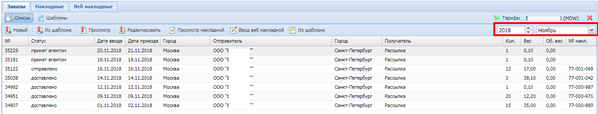
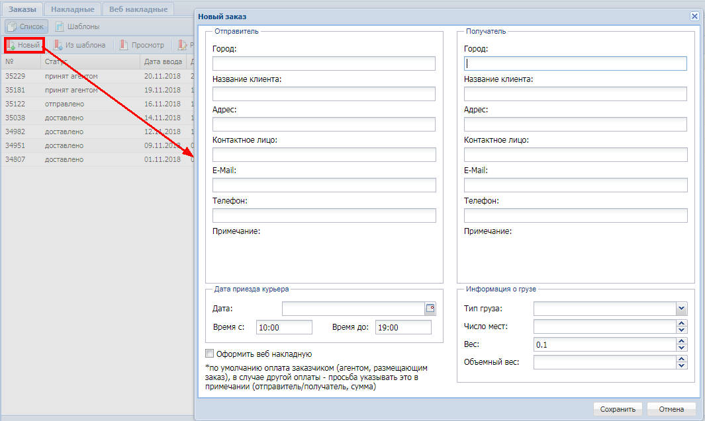
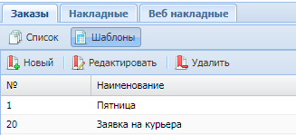
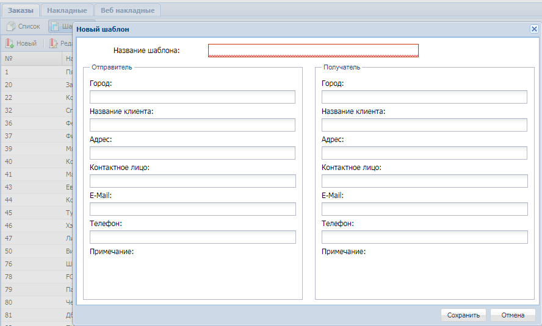
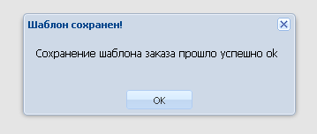
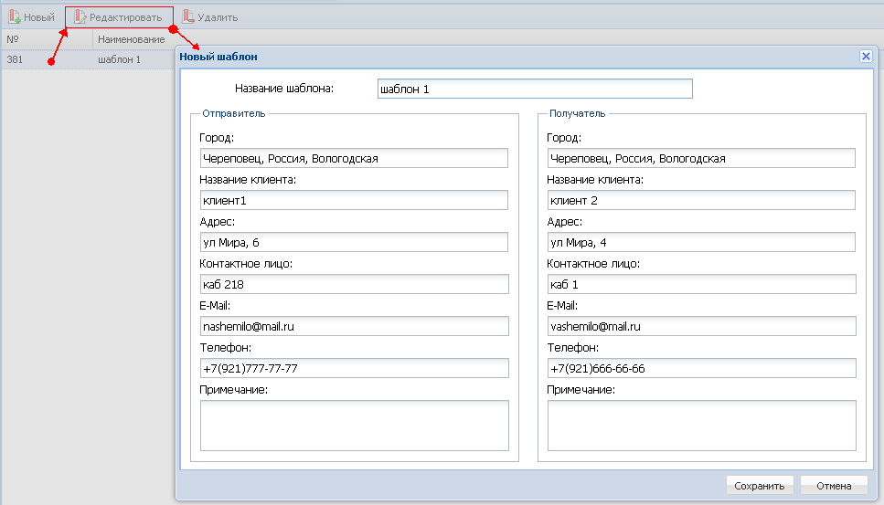
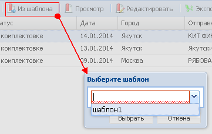
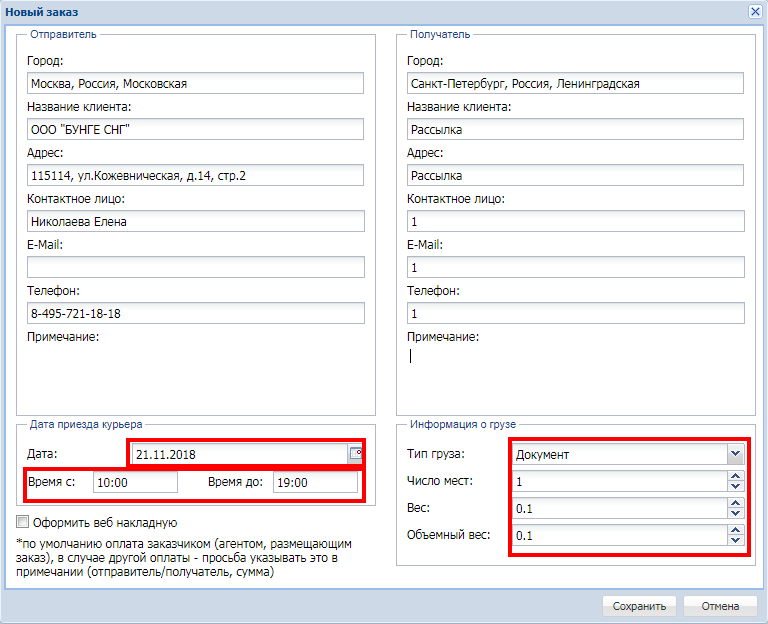
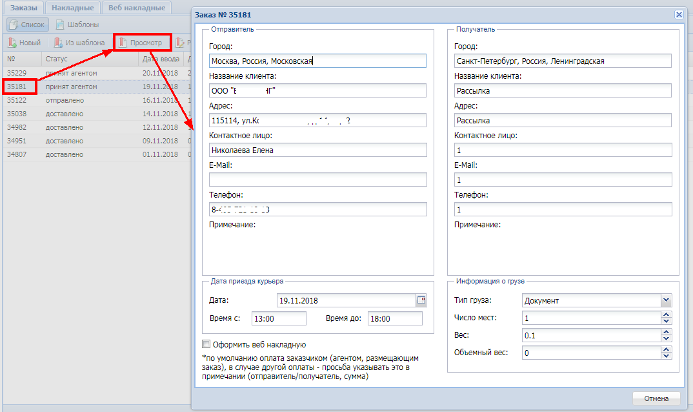
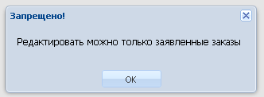

|
Заказы |
Вверх Назад Вперед |
|
Для просмотра заказов за предыдущие периоды нужно выбрать нужный месяц:  Для создания нового заказа, необходимо нажать кнопку "новый" и заполнить форму. 
Если есть необходимость в создании нескольких похожих заказов, можно сделать шаблон и создавать заказы на его основе. Для создания, просмотра, редактирования и удаления шаблонов нужно перейти в раздел шаблонов нажав на одноименную кнопку. 
Для создания шаблона необходимо нажать кнопку "Новый" и в получившемся окне заполнить форму, нажать кнопку "Сохранить".

Если все поля заполнены правильно то после сохранения появится окно подтверждения успнешного сохранения.

Для редактирования или удаления шаблона необходимо его выделить и нажать соответсвующую кнопку. 
Для создания заказа по шаблону необходимо нажать кнопку "Из шаблона" и выбрать название соответствующего шаблона, нажать кнопку "Выбрать". 
В открывшемся окне внести необходимую информацию и сохранить.

Для просмотра информации по заказу необходимо его выделить и нажать кнопку "Просмотр". 
Для редактирования заказа необходимо его выделить и нажать кнопку "Редактировать".
Внимание! Редактировать можно только заявленные заказы. Если попытаться редактировать заказ с другим статусом то появится окно с предупреждением. 
|